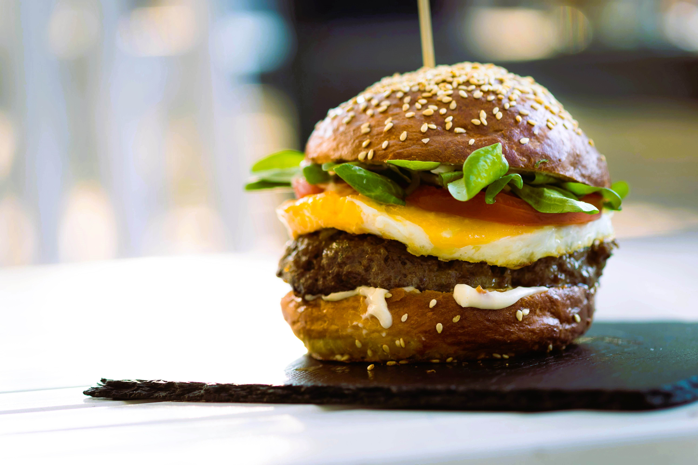

BURGER

Description
Indulge in the ultimate homemade burger experience with juicy, seasoned beef patties grilled to perfection and topped with fresh,
vibrant ingredients. This recipe guides you through creating a mouthwatering burger that's sure to become a family favorite
Ingredients
- 1 pound ground beef (80% lean)
- 1 teaspoon salt
- 1/2 teaspoon black pepper
- 1 teaspoon garlic powder
- 1 teaspoon onion powder
- 1 tablespoon Worcestershire sauce
- 4 hamburger buns
- 4 slices cheddar cheese
- 1 tomato, sliced
- 1 onion, sliced
- Lettuce leaves
- Pickles
- Ketchup
- Mustard
- Mayonnaise
Optional Toppings
- Avocado slices
- Jalapeño slices
- BBQ sauce
Steps
- Slice the tomato and onion.
Wash and dry the lettuce leaves.
Slice any optional toppings such as avocado or jalapeños.
Set out the buns, cheese, and condiments (ketchup, mustard, mayonnaise, etc.).
- In a large bowl, combine the ground beef with salt, black pepper, garlic powder, onion powder, and Worcestershire sauce.
Mix gently until just combined. Avoid over-mixing to keep the burgers tender.
- Divide the beef mixture into 4 equal portions.
Shape each portion into a patty about 3/4-inch thick, pressing a slight indentation in the center of each patty to prevent it
from puffing up during cooking.
- Preheat a grill or skillet over medium-high heat. Lightly oil the grill grates or skillet.
Cook the patties for about 4-5 minutes per side for medium doneness, or adjust the cooking time to your preferred level of doneness.
In the last minute of cooking, place a slice of cheddar cheese on each patty to melt.
- While the patties are cooking, lightly toast the hamburger buns on the grill or in a toaster until golden brown.
- Spread mayonnaise on the bottom half of each toasted bun.
Place a lettuce leaf on top, followed by a cooked burger patty with melted cheese.
Add tomato slices, onion slices, pickles, and any optional toppings.
Spread ketchup and mustard on the top half of the bun.
Place the top bun over the assembled burger.
- Serve the burgers immediately with your favorite side dishes, such as fries, coleslaw, or a salad.